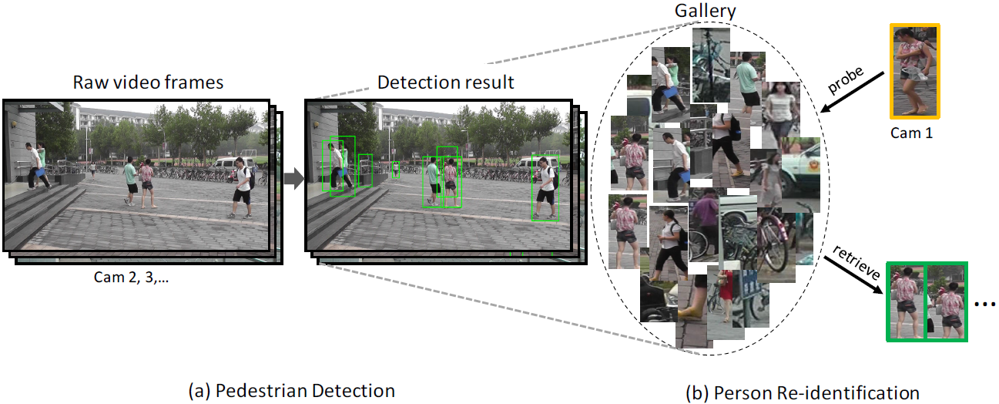

In this page, we introduce the Person Re-identification in the Wild (PRW) dataset as well as the baseline evaluation codes.
If you use this dataset in your research, please kindly cite our work as,
PRW (Person Re-identification in the Wild) Dataset

The PRW dataset is annotated from the same video as the Market-1501 dataset, i.e., captured with 6 cameras in the summer of 2014 in Tsinghua University. We have annotated 11,816 video frames, 932 identities belonging to 34,304 bounding boxes. Same with Market-1501, we perform cross-camera retrieval, but readers should keep in mind that the identities in PRW are not corresponed to those in Market-1501. The query images are again hand-drawn bounding boxes. For each ID, multiple queries and multiple ground truths should exist, so that one can develop sophisticated multiple-query or re-ranking methods.
In a nutshell, the PRW provides as input: 1) query boxes, 2) video frames. One should output a rank list of the detected bounding boxes and calculate mAP (or CMC) according to the ground truth labels.
| Dataset | # frame | # ID | # annotated box | # box/ID | # gallery box | # camera |
| PRW | 11,816 | 932 | 34,304 | 36.8 | 100-500k | 6 |
| CAMPUS | 214 | 74 | 1,519 | 20.5 | 1,519 | 3 |
| EPFL | 80 | 30 | 294 | 9.8 | 294 | 4 |
| Market-1501 | 0 | 1,501 | 25,259 | 19.9 | 19,732 | 6 |
| RAiD | 0 | 43 | 6,920 | 160.9 | 6,920 | 4 |
| VIPeR | 0 | 632 | 1,264 | 2 | 632 | 2 |
| i-LIDS | 0 | 119 | 476 | 2 | 238 | 2 |
| CUHK03 | 0 | 1,360 | 13,164 | 9.7 | ~1,316 | 2 |
Baseline Codes
The baseline evaluation code is provided on Github. Click here.
For the current version, we provide the detection results using DPM detector pre-trained on the INRIA pedestrian detection dataset. Then, we extract the BoW descriptor and use XQDA as in metric learning.
We are actively adding baseline detectors to the project. Please stay tuned.
Dataset Download
The dataset package is provided on Baidu Cloud below. All versions are shown. One will want to download the latest version.
v2016.04.20 (2.67GB) on Baidu, v2016.04.20 (2.67GB) on GoogleDrive. ID_train/test are added. The "generate_query.m" is modified.
v2016.04.13 (2.67GB).
The package contains three folders.
1) "frames". There are 11,816 frames in this folder.
2) "annotations". For each frame, we provide its annotated data. All annotated boxes are pedestrians. Each MAT file records the bounding box position within the frame and its ID. The coordinates of each box are formatted in [x, y, w, h]. The ID of each box takes the value of [1, 932] as well as -2. "-2" means that we do not know for sure the ID of the person, and is not used in the testing of person re-id, but is used in train/test of pedestrian detection (potentially used in the training of person re-identification).
3) "query_box". It contains the query boxes of the PRW dataset. All togther there are 2057 queries. For naming rule, for example, in "479_c1s3_016471.jpg", "479" refers to the ID of the query, and "c1s3_016471" refers to the video frame where the query is cropped. Note that 1) the query IDs are not included in the training set, 2) the query images are not normalized (we typically use 128*64 for BoW extraction, and 224*224 for CNN feature extraction), 3)all queries are hand-drawn boxes, 4) we select one query image for each testing ID under each camera, so the maximum number of queries per ID is 6. In addition, we provide the bounding box information of each query in "query_info.txt", so one can generate the queries from the video frames through function "generate_query.m".
In addition, we provide the train/test split of the PRW dataset. One do not have to perform 10-fold cross validation. In detail, "frame_test.mat" and "frame_train.mat" specify the train/test frames, and "ID_test.mat" and "ID_train.mat" specify the train/test IDs. Note that a small portion of IDs used in training may appear in the testing frames, but will not appear in the testing IDs.